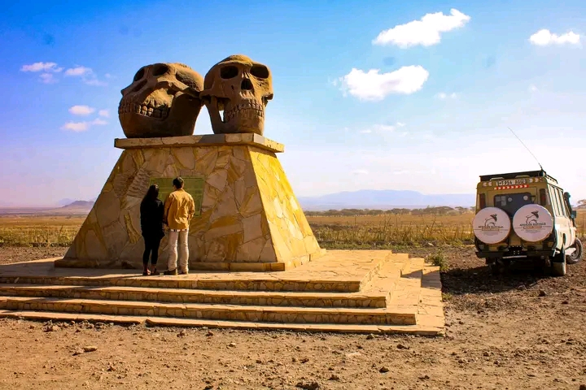
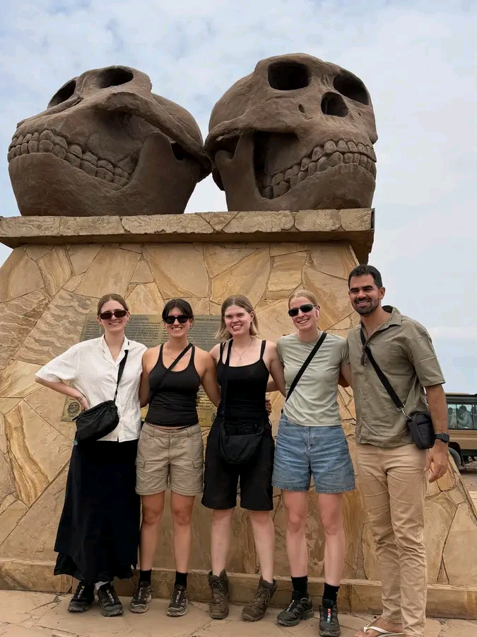

Well as the possibility of visiting an active dig.
Olduvai Gorge was made famous by paleoanthropologists Louis and Mary Leakey, who conducted numerous digs here in the mid 20th century. It is globally renowned for the early hominin fossils discovered here, most notably 'Nutcracker Man', a new species of hominin that was later classified as Paranthropus boisei. Sites at Olduvai Gorge have also yielded a vast quantity of stone tools, plant and mammal fossils, and the area remains important for research.
A visit to the Olduvai Gorge focuses on the smart new museum, opened in October 2017 and overlooking the gorge. Whilst here you will also have a chance to listen to a short presentation by a resident guide.
Explore the different sections of the museum to discover the history of the site and learn about the various fossils to be found here. See a replica of the nearby Laetoli Footprints, which provide some of the earliest evidence of bipedalism; learn about the hominines and prehistoric mammals that lived in the area; and chat with a resident expert about the significance of the area as well as the current research. It takes around an hour to explore the museum, but there is no time limit.
For a small tip of around $10 USD you can drive down in to the gorge itself and visit the sites where Mary and Louis Leakey discovered early hominin remains. This is around a ten-minute drive, and you would typically spend no more than 20 minutes here. You'll go with a member of staff, not a guide, but there is an information board at the site.
It is also sometimes possible to visit active dig sites, as Olduvai Gorge is the focus of a number of ongoing studies. Teams of researchers typically visit in the dry season, between June and October, so you may be able to chat to the scientists involved and hear about the latest findings to come out of the gorge.
A 30-minute drive from Olduvai you can find a curious phenomena, a shifting sand dune. This dune is formed from fine volcanic ash, which due to its high iron content is highly magnetic. This means that the dune clings together, and acts as a single unit as it slowly moves across the landscape. Researchers have tracked the movement of the dune over time, finding it that it moves around 10m a year, blown by the prevailing wind.
Spend anything from an hour here, depending on how long you want to spend in the museum.